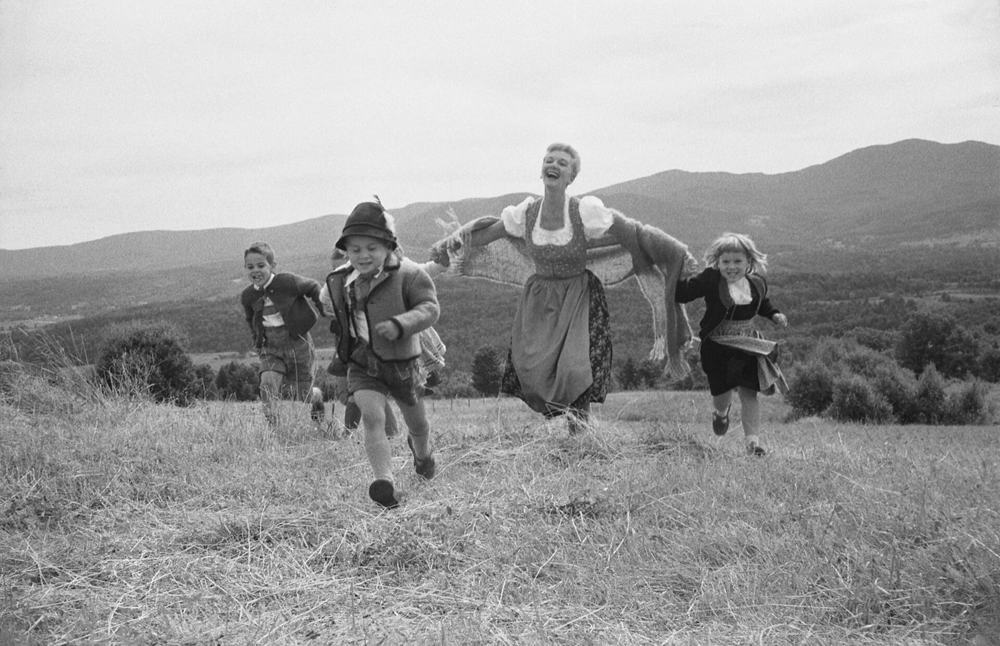
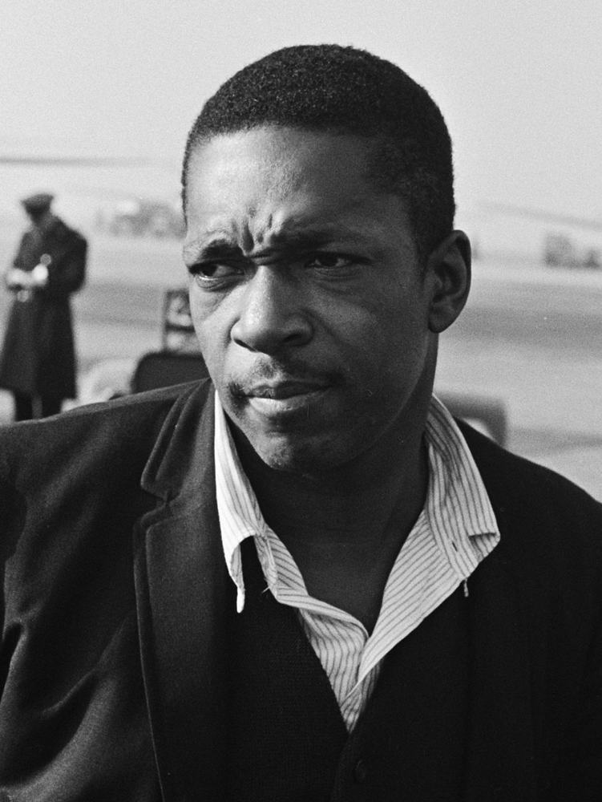

故事
一首音樂劇裡的小曲子，被他吹成了十三分多鐘。1959 年，音樂劇 The Sound of Music 在百老匯首演。劇裡有一首歌，叫 My Favorite Things。
1960 年，John Coltrane 帶著四重奏，把它錄成爵士。他吹的是高音薩克斯風，聲音細細的，有點像東方的笛子。鋼琴手 McCoy Tyner 一直在兩個和弦之間來回，像在原地打轉。

原本兩三分鐘的歌，在專輯裡變成十三分多鐘。剪短的版本在電台播放，成了他最暢銷的唱片之一。之後他幾乎場場都吹這首，現場版本越吹越長。下次聽到 My Favorite Things，想想它原本只是一首兩分鐘的小歌。
故事後面
My Favorite Things 出自一九五九年的音樂劇 The Sound of Music。隔年 John Coltrane 把它錄成爵士，用的是高音薩克斯風。
McCoy Tyner 的鋼琴在兩個和弦之間來回，給獨奏很大的空間。專輯版本長達十三分多鐘。
之後柯川幾乎場場都吹這首，現場版本越吹越長，成了他最具代表性的曲子之一。

這樣聽
聽高音薩克斯風的音色，和鋼琴一直來回的兩個和弦。
逐句英文
A little song from a musical became, in his hands, more than thirteen minutes long.
In 1959 the musical The Sound of Music opened on Broadway.
One of its songs was My Favorite Things.
In 1960 John Coltrane recorded it as jazz with his quartet.
He played soprano sax, thin and reedy, a little like an Eastern flute.
Pianist McCoy Tyner rocked between two chords, as if circling in place.
A song of two or three minutes ran over thirteen on the album.
An edited version played on radio, and it became one of his best-selling records.
He played it at almost every show after that, and the live versions grew longer and longer.
Next time you hear My Favorite Things, remember it was once a two-minute tune.
查證筆記與出處
專輯版長度十三分四十一秒：條目。「最暢銷之一」為條目概括。「像東方的笛子」是我的比喻。
https://en.wikipedia.org/wiki/My_Favorite_Things_(album)
https://en.wikipedia.org/wiki/My_Favorite_Things
一分鐘影片版在 Instagram @jazz101tw。